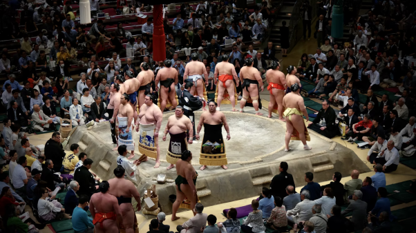

Trong khi nhiều người đang cố gắng từng ngày để trông gầy hơn thì tại Nhật Bản hơn 2000 năm nay xuất hiện một môn võ ưu tiên dành riêng cho những người có cân nặng vượt trội.
Sumo Nhật Bản là môn võ cổ truyền thể hiện tinh thần của Thần Đạo (Shinto) - nền văn hóa tín ngưỡng bậc nhất của người dân Nhật. Trong mỗi cuộc thi đấu, các Sumo sẽ thể hiện những điệu múa cổ truyền và một vài nghi lễ chính. Những điệu múa này là dịp để Sumo thay mặt người dân cảm tạ trời đất và cầu cho một vụ mùa bội thu. Vì vậy, môn võ Sumo được xem là niềm tự hào của văn hóa con người Nhật Bản.

Sumo Nhật Bản với thân hình to lớn vượt trội, có kích cỡ gấp 2-3 lần người bình thường. Họ là một trong những hình tượng nổi tiếng khắp thế giới.
Người dân phương Tây định nghĩa Sumo với cái tên “Sumo -wreslter”, họ xem đây là một môn đô vật đối kháng thay vì một môn võ thông thường. Du khách khi du lịch Nhật Bản đều mong muốn được thưởng thức một buổi trình diễn mãn nhãn từ các Sumo.
Sumo xuất hiện từ 2000 năm trước tại các đền chùa với nhiều nghi thức thể hiện văn hóa Nhật. Tuy nhiên mãi đến năm 642, trận thi đấu giữa các Sumotori (võ sĩ Sumo) lần đầu tiên diễn ra và được thế giới công nhận.
Thời kỳ Nara được xem là giai đoạn hoàng kim và có bước chuyển mình đáng ngạc nhiên của Sumo Nhật Bản. Thời này, người ta đưa môn võ này để trình diễn trong triều đình. Các luật lệ bắt đầu được thiết lập và áp dụng mãi cho đến ngày nay.
Bên cạnh đó những Sumo còn được đưa vào các trận chiến ở thế kỉ 12 nhằm đả kích và đe dọa quân địch. Có thể nói Sumo không chỉ đơn thuần là một môn thể thao truyền thống mà còn là sự tự hào của văn hóa con người Nhật Bản.
Tương tự như những môn võ thế giới khác, Sumo cũng có những cấp bậc và quy tắc riêng. Dưới đây là tất cả các cấp bậc trong sự nghiệp của một Sumotori.
Jonokuchi
Jonokuchi là cấp bậc thấp nhất mà bất kỳ Sumo nào khi vào nghề cũng sẽ trải qua. Đây cũng được xem như một cấp bậc dành cho những người tập sự.
Không khó để những Sumo ở cấp bậc này tăng hạn. Tuy nhiên, dù gặp chấn thương hay phong độ sa sút các Sumo cũng sẽ không trở về cấp bậc Jonokuchi này.
Jonidan
Cấp bậc tiếp theo là Jonidan khi các võ sĩ Sumo đã có một số kinh nghiệm nhất định. Tuy vậy áo khoác Kimono sẽ không được dùng cho các Sumo ở cấp bậc này bất kể thời tiết nóng hay lạnh.
Sandanme
Ở cấp bậc Sandanme, các Sumo Nhật Bản đã bắt đầu được nhận những khoản trợ cấp nhất định sau mỗi trận đấu.
Makushita
Makushita là cấp bậc cuối cùng của khóa huấn luyện để trở thành những võ sĩ Sumo thực thụ. Những ai ở cấp bậc này khi thắng 7 trận đấu sẽ được tăng hạng vô điều kiện lên Juryo - một Sumo chính thức.
Juryo
Juryo là cấp bậc các võ sĩ được thi đấu chuyên nghiệp trong các giải khác nhau. Các Sumotori sẽ chính thức thi đấu với nhau trong những trận đấu. Người thắng cuộc với thứ hạng cao sẽ được tăng cấp bậc.
Maegashira
Đây được xem là cấp hạng đông đảo nhất trong thế giới Sumo Nhật Bản. Các Sumo ở vị trí này sẽ được thi đấu các giải chuyên nghiệp hoặc những người được tăng thứ hạng nhưng có phong độ sa sút, thường sẽ trở về lại cấp bậc Maegashira.
Komusubi
Komusubi là cấp bậc phong cho võ sĩ cấp Maegashira - người có 10 - 11 trận thắng hoặc thắng một người có cấp bậc cao hơn mình.
Sekiwake
Trong văn hóa Nhật, Sekiwake là cấp bậc cho một võ sĩ Sumo có số trận thắng trong một mùa giải nhiều hơn số trận thua, trung bình tính từ 10 trận trở lên. Tuy vậy, nếu có một mùa giải không thành công họ sẽ bị hạ cấp bậc.
Ozeki
Các võ sĩ Sumo thắng 33 trận hay đoạt chức vô địch ba mùa đấu Sumo liên tiếp sẽ được phong cấp bậc Ozeki. Tương tự như cấp bậc trên, nếu phong độ thi đấu không tốt, có số lần thua nhiều hơn các võ sĩ sẽ bị hạ cấp bậc.
Yokozuna
Cấp bậc cao quý nhất trong bộ môn võ Sumo. Muốn đạt đến đẳng cấp này, võ sĩ Sumo phải có một thành tích nổi bật và giữ ổn định tại mỗi mùa giải. Thông thường mỗi vòng người này phải thắng từ 12/15 trận. Hiện nay chỉ có 67 người được phong cấp bậc Yokozuna và chỉ còn một vài người còn sống.
Du lịch Nhật Bản không thể bỏ lỡ cơ hội chiêm ngưỡng những trận đấu mãn nhãn của các võ sĩ Sumo Nhật Bản trên sàn đấu. Trải nghiệm này sẽ mang đến cho bạn những cảm giác mới lạ, thích thú khi được trải nghiệm văn hóa Nhật rõ nét.